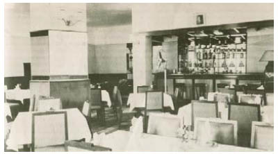

Những con ngựa quỷ chất đúng với tên gọi của chúng. Vào đêm thứ hai một con đã lẻn đến chỗ Jacob với hàm răng nhe ra, và chúng đã làm bỏng mấy ngón tay của Donnersmarck khi ông cho chúng ăn thịt thỏ. Nhưng chúng phi rất nhanh.
Những cột mốc biên giới, những con đường mòn trên núi đóng băng. Hồ nước, rừng rậm, làng mạc, thành phố. Jacob cảm thấy nỗi lo sợ về Cáo như thuốc độc gặm nhấm khắp cơ thể anh. Viễn cảnh tìm thấy cô đã chết thật quá sức chịu đựng, đến nỗi anh cố khóa những ý nghĩ ấy lại, như khi còn bé anh đã khóa nỗi nhớ bố lại vậy. Nhưng không thành công. Mỗi ngày trôi qua, mỗi dặm đường họ bỏ lại phía sau, những hình ảnh ấy càng trở nên kinh khủng hơn, và trong giấc mơ của anh chúng thật đến nỗi anh bừng tỉnh dậy, tìm dấu máu cô trên bàn tay mình.
Anh hỏi han Donnersmarck về nữ hoàng và con gái của bà, để tự làm mình xao nhãng, về đứa trẻ không nên được sinh ra, về Hắc Tiên... Dù vậy giọng của Donnersmarck cứ không ngừng biến thành giọng Cáo: Anh sẽ tìm ra quả tim. Em biết thế mà. Tất cả những gì anh muốn tìm thấy là cô.
Khi cuối cùng họ vượt qua được biên giới Lothringen, đã hơn sáu ngày trôi qua kể từ lúc Troisclerq bước lên xe ngựa cùng với cô. Họ vượt những dòng sông in bóng những tòa lâu đài trắng, cưỡi ngựa qua những xóm làng với đường sá gập ghềnh, lắng nghe những bông hoa hát trong ánh trăng như những chú họa mi... Trái tim của Lothringen vẫn đập theo nhịp điệu xưa cũ, trong khi các kỹ sư ở Albion đang xây dựng nhịp mới chạy bằng động cơ.
Donnersmarck buộc ngựa. Trên một đồng cỏ xen lẫn những bông hoa trắng trong đám cỏ bị gia súc gặm. Quên-chính-mình-đi. Đàn gia súc tránh những bông hoa trông không mấy nổi bật, tỏa ra mùi dầu mê mà yêu râu xanh nhỏ lên và cài trên áo hoặc tóc những nạn nhân của bọn chúng. Chúng cũng xoa dầu mê lên gò má nhẵn nhụi của mình.
Một lát sau họ đi đến một biển chỉ đường. Còn ba dặm nữa là đến Champlitte. Họ nhìn nhau. Trong đầu họ hiện lên cùng một hình ảnh. Nhưng trong ký ức của Jacob, thậm chí người em gái đã chết của Donnersmarck cũng có khuôn mặt của Cáo.